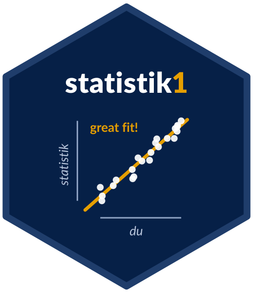

Statistik1
Daten umformen
Sebastian Sauer
Einstieg
Lernziele
- Sie können typische Probleme in Rohdaten benennen (Dubletten, fehlende Werte, unplausible Werte und Extremwerte, uneinheitliche Kodierung) und in einem Datensatz erkennen.
- Sie können Probleme beim Einlesen einer Datei erkennen (Notizzeilen, unbrauchbare Spaltennamen, Fehlcodes wie
-99) und beim Import beheben. - Sie können für jedes dieser Probleme eine begründete Entscheidung treffen und diese festhalten.
- Sie können die Verben des Datenjudos (
arrange,filter,select,summarise,group_by,mutate) einer Aufgabe zuordnen und R-Code mit ihnen lesen und anwenden. - Sie können eine Tabelle mit
pivot_longerundpivot_widerzwischen Breit- und Langformat umwandeln. - Sie können R-Befehle mit der “Pfeife” verketten.
Einstieg
Definition: Datenjudo
Definition: Datenjudo
Mit Datenjudo meint man den Prozess des Aufbereitens, Umformens oder Zusammenfassens von Daten — sei es für einzelne Beobachtungen (Zeilen), Variablen (Spalten) oder eine ganze Datentabelle.
Einstieg
Praxisbezug: Data Science ist 80 % Aufbereiten
Laut Harvard Business Review verbringen Data Scientisten ca. 80 % ihrer Zeit mit dem Aufbereiten von Daten (Bowne-Anderson, 2018).
Uncoole Tätigkeiten wie Tippfehler entfernen oder Daten nutzbar machen — aber unverzichtbar. Das Aufbereiten von Daten verlangt keine aufwändige Mathematik, sondern ein paar Handgriffe und Kniffe: das Datenjudo.
Einstieg
Das Lego-Prinzip

Komplexe Datenaufbereitung wird elegant, wenn man sie in einfache Teilschritte zergliedert — so wie ein komplexes Lego-Modell aus einfachen Bausteinen besteht.
Einstieg
Was Rohdaten typischerweise falsch machen
Erst denken, dann rechnen
Was muss man mit Daten tun, bevor man ihnen trauen kann?
- Den Code dafür schreibt Ihnen eine KI auf Zuruf.
- Ob es richtig ist, einen Fall zu entfernen, hängt von Ihrer Forschungsfrage ab — und die kennen nur Sie.
Für jedes Problem fragen wir:
- Woran erkennt man es?
- Welche Entscheidung muss ich treffen?
- Was passiert, wenn man es ignoriert?
Was Rohdaten typischerweise falsch machen
Der Datenguru bekommt Rohdaten
Die Chefin schickt einen frischen Export: mariokart_roh. “Rechnen Sie mal schnell den mittleren Preis aus.”
Der erste Schritt ist immer derselbe: ein Blick in die Daten (glimpse).
Was Rohdaten typischerweise falsch machen
Dubletten
Definition: Dublette
Eine Dublette ist ein Fall (eine Zeile), der versehentlich mehrfach im Datensatz steht.
- Erkennen: Eine eindeutige Kennung (Auktions-, Kunden-, Matrikelnummer) kommt mehrfach vor:
- Entscheiden: Gleiche ID = Exportfehler → eine Zeile behalten (
distinct()). Ohne Kennung lassen sich Dubletten nicht von zufällig gleichen Fällen unterscheiden. - Folgen: Doppelte Fälle zählen doppelt; die Stichprobe wirkt größer, Kennwerte sind verzerrt.
Was Rohdaten typischerweise falsch machen
Fehlende Werte
- Erkennen:
NAzählen, pro Spalte. - Entscheiden: Erst fragen, warum der Wert fehlt. Pragmatisch: bei der jeweiligen Berechnung weglassen.
- Vorsicht, Holzhammer:
drop_na()ohne Spaltenangabe löscht jede Zeile mit irgendeinemNA. Im Rohdatensatz: 9 Zeilen mitNA, aber nur bei 2 fehlt der Preis. - Folgen: Im harmlosen Fall gibt R
NAzurück. Im unangenehmen Fall schrumpft die Stichprobe stillschweigend — und fehlen Werte nicht zufällig, verzerrt das die Ergebnisse.
Was Rohdaten typischerweise falsch machen
Ihr Zug: fehlende Werte zählen
Wie viele fehlende Werte hat die Spalte seller_rate (Bewertung des Verkäufers) im Datensatz mariokart_roh?
Eine Spalte sprechen Sie mit dem Dollarzeichen an: datensatz$spalte.
Was Rohdaten typischerweise falsch machen
Unplausibel oder extrem?
Definition: Unplausibler Wert und Extremwert
Ein unplausibler Wert kann nicht stimmen (z. B. ein negatives Alter). Ein Extremwert (Ausreißer) weicht stark ab, ist aber möglich.
- Unplausibel: Eine Auktion soll 70 Tage gedauert haben — bei eBay sind höchstens 10 möglich. → Korrigieren, wenn man sicher ist, sonst
NA. - Extrem: 327 und 118 Dollar, alle anderen unter 80 Dollar. Die Titel verraten: eine Konsole mit Spielen bzw. ein Paket mit zehn Spielen.
Was Rohdaten typischerweise falsch machen
Extremwerte: die Leitfrage
Gehört dieser Fall zu dem, worüber ich eine Aussage treffen will?
Forschungsfrage: Preis eines Mariokart-Spiels → Bundles gehören nicht dazu → filter(total_pr < 100). Diese Entscheidung gilt für den Rest des Buches.
Wichtig
Extremwerte werden nicht entfernt, weil sie stören, sondern wenn es einen inhaltlichen Grund gibt. Und diese Entscheidung wird offengelegt.
Was Rohdaten typischerweise falsch machen
Uneinheitliche Kodierung
Fünf statt zwei Kategorien: Für R sind "used", "USED" und "gebraucht" drei verschiedene Dinge.
→ Auf eine Schreibweise vereinheitlichen, sonst werden Gruppenvergleiche falsch.
Was Rohdaten typischerweise falsch machen
Aufbereitung dokumentieren
- Die Rohdaten bleiben unangetastet — man erzeugt einen neuen, bereinigten Datensatz.
- Jeder Schritt steht im Skript.
- Jede Entscheidung bekommt eine Begründung, am besten als Kommentar.
mariokart_bereinigt <-
mariokart_roh |>
# Dubletten: drei Auktionen wurden doppelt exportiert
distinct() |>
# Kodierung vereinheitlichen: nur "new" und "used"
mutate(cond = str_to_lower(cond),
cond = if_else(cond == "gebraucht", "used", cond)) |>
# Unplausibel: Auktionen dauern höchstens 10 Tage, wahrer Wert unbekannt
mutate(duration = if_else(duration > 10, NA, duration)) |>
# Extremwerte: Bundles gehören nicht zur Forschungsfrage
filter(total_pr < 100)Ergebnis: 139 Zeilen, mittlerer Preis 47.4 statt 49.9 Dollar.
Was Rohdaten typischerweise falsch machen
Probleme schon beim Einlesen
mariokart_roh kommt aus einer Datenbank: eine Kopfzeile, darunter ein Fall pro Zeile. Von Hand gepflegte Excel-Listen sind oft weniger ordentlich — dann steckt der Fehler schon im Aufbau der Datei.
Ein Kommilitone schickt umfrage_roh (zwei zusammengeklebte Excel-Listen, 120 Befragte) samt Data-Dictionary: “Wie lange pendeln unsere Studis im Mittel?”
Umfrage Studierende WS 2026; Export aus Excel; Stand 12.10.2026
ID,alter (Jahre),Geschlecht,STUDIENGANG,Semester,Pendelweg [min],...
S001,22,maennlich,BWL,7,46,Bus,5,7,13.2Was Rohdaten typischerweise falsch machen
Vier Stolpersteine beim Einlesen
- Notizzeile über der Kopfzeile:
read_csv()hält immer die erste Zeile für die Kopfzeile. →skip = 1 - Unbrauchbare Spaltennamen (Leerzeichen, Klammern, Umlaute): nur mit Backticks ansprechbar, z. B.
`Pendelweg [min]`. → mitrename()umbenennen, am besten in die Namen aus dem Data-Dictionary - Fehlcodes: Fehlende Angaben stehen als leere Zelle,
k.A.oder-99.k.A.macht die Spalte zu Text (sieht man beiglimpse);-99ist eine gültige Zahl — R rechnet klaglos weiter. →na = c("", "NA", "k.A.", "-99") - Zeilen, die keine Fälle sind: Leerzeile, wiederholte Kopfzeile, Summenzeile. Die doppelte Kopfzeile macht stillschweigend alle Spalten zu Text. → herausfiltern, dann
type_convert()
Was Rohdaten typischerweise falsch machen
Sauber einlesen
umfrage <-
read_csv(umfrage_path,
skip = 1, # Notizzeile überspringen
na = c("", "NA", "k.A.", "-99")) |> # Fehlcodes laut Data-Dictionary
rename(id = ID, pendelweg_min = `Pendelweg [min]`,
schlaf_std = `Schlaf in Std.`, ...) |> # Namen laut Data-Dictionary
filter(!is.na(id), id != "ID", id != "Summe") |> # Zeilen, die keine Fälle sind
type_convert() # Spaltentypen neu bestimmen- Was hätte
-99angerichtet? Mittlere Schlafdauer 6.30 statt 7.10 Stunden — rund 48 Minuten daneben, ohne jede Warnung. - Noch nicht fertig: 123 statt 120 Zeilen,
semesterundpendelweg_minsind noch Text (5. Sem.,17 min). Ab jetzt die bekannten Probleme: Dubletten, Tippfehler, unplausible Werte, Extremwerte.
Was Rohdaten typischerweise falsch machen
Überblick
| Problem | Erkennungszeichen | typische Entscheidung | R-Werkzeug |
|---|---|---|---|
| Dubletten | eine Kennung (ID) kommt mehrfach vor | doppelte Zeilen entfernen | count(), distinct() |
| fehlende Werte | NA in einer Spalte |
bei der jeweiligen Berechnung weglassen | is.na(), na.rm = TRUE |
| unplausible Werte | Wert ist unmöglich | korrigieren, wenn sicher, sonst NA |
summarise(), mutate() |
| Extremwerte | Wert weicht stark ab, ist aber möglich | prüfen, ob der Fall zur Fragestellung gehört | arrange(), filter() |
| uneinheitliche Kodierung | zu viele Kategorien, Tippfehler | auf eine Schreibweise vereinheitlichen | count(), mutate() |
Was Rohdaten typischerweise falsch machen
Überblick: Probleme beim Einlesen
| Problem | Erkennungszeichen | typische Entscheidung | R-Werkzeug |
|---|---|---|---|
| Notiz-, Leer-, Summenzeilen | zu wenige Spalten, Zeilen ohne Fall | beim Einlesen überspringen bzw. herausfiltern | skip =, filter() |
| unbrauchbare Spaltennamen | Leerzeichen, Klammern, Umlaute | umbenennen | rename() |
| Fehlcodes | Werte wie -99 oder k.A. |
als fehlend kennzeichnen | na = c(...) |
| Zahl als Text | Zahlenspalte hat den Typ chr |
Ursache finden, Typ korrigieren | glimpse(), type_convert() |
Was Rohdaten typischerweise falsch machen
Die Verben des Datenjudos
Jede Aufgabe hat ihr Verb
| Aufgabe | Verb | Beispiel |
|---|---|---|
| Zeilen (Fälle) auswählen | filter |
nur die neuen Spiele |
| Spalten (Variablen) auswählen | select |
nur Zustand und Preis |
| Zeilen sortieren | arrange |
die teuersten Spiele zuerst |
| Spalte neu berechnen | mutate |
Preis in Yen umrechnen |
| Zeilen zählen | count |
Wie viele Spiele sind neu? |
| aufteilen und zusammenfassen | group_by + summarise |
mittlerer Preis je Zustand |
Wer die Aufgabe kennt, kennt das Verb — und kann es einer KI präzise sagen oder in deren Code wiedererkennen. Die Verben wohnen im Paket dplyr (library(tidyverse)).
Die Verben des Datenjudos
Ein einfacher Beispieldatensatz
| id | name | gruppe | note |
|---|---|---|---|
| 1 | Anni | A | 2.7 |
| 2 | Berti | A | 2.7 |
| 3 | Charli | B | 1.7 |
Jedes Verb zuerst an diesem Spielzeug-Datensatz, dann an den Mariokart-Daten.
Die Verben des Datenjudos
Zeilen filtern: filter

filter: Gruppe B wurde entfernt.Die Verben des Datenjudos
Ihr Zug: filter
Filtern Sie die Spiele mit nur einem Lenkrad (wheels) und ohne Versandkosten (ship_pr).
Gleichheit prüfen Sie mit ==, z. B. wheels == 1.
Die Verben des Datenjudos
Spalten auswählen: select

selectDie Verben des Datenjudos
Zeilen sortieren: arrange

arrange: Die Noten wurden aufsteigend sortiert.Sortieren ist der schnellste Weg, Extremwerte zu finden.
Die Verben des Datenjudos
Spalten neu berechnen: mutate

mutateDie Rechnung läuft für jede Zeile; derselbe Spaltenname überschreibt die Spalte (z. B. zum Korrigieren von cond).
Die Verben des Datenjudos
Zeilen zählen: count
Bei nominalskalierten Daten ist Zählen (fast) das Einzige, was man tun kann:
Die Verben des Datenjudos
Zusammenfassen: summarise

summarise: Die Noten wurden zum Mittelwert zusammengefasst.summarise fasst eine Spalte zu einer einzelnen Zahl zusammen — wie, steht in der Klammer (mean, max, …).
Die Verben des Datenjudos
Aufteilen: group_by

group_by: Aufteilung anhand der Variable gruppe.Alle nachfolgenden Berechnungen laufen für jede Teiltabelle einzeln — darum kommen group_by und summarise fast immer im Doppelpack.
Die Verben des Datenjudos
Breit und lang umformen: pivot_longer und pivot_wider

Für die meisten Auswertungen und Diagramme braucht man das Langformat (Tidy Data). Liegen die Daten breit vor, formt man sie um.
Die Verben des Datenjudos
Breit → lang: pivot_longer
Definition: pivot_longer
pivot_longer wandelt eine Tabelle vom Breit- ins Langformat um. Man gibt an, welche Spalten zusammengefasst werden (cols), wie die neue Spalte mit den bisherigen Spaltenköpfen heißt (names_to) und wie die neue Spalte mit den Werten heißt (values_to).
umsatz_breit <- tribble(
~Produkt, ~Umsatz_2021, ~Umsatz_2022, ~Umsatz_2023,
"Hämmer", 10, 11, 12,
"Nägel", 15, 10, 5)
umsatz_lang <- pivot_longer(umsatz_breit,
cols = c(Umsatz_2021, Umsatz_2022, Umsatz_2023),
names_to = "Jahr",
names_prefix = "Umsatz_", # schneidet "Umsatz_" ab
values_to = "Umsatz")| Produkt | Jahr | Umsatz |
|---|---|---|
| Hämmer | 2021 | 10 |
| Hämmer | 2022 | 11 |
| Hämmer | 2023 | 12 |
| Nägel | 2021 | 15 |
| Nägel | 2022 | 10 |
| Nägel | 2023 | 5 |
Die Verben des Datenjudos
Lang → breit: pivot_wider
Definition: pivot_wider
pivot_wider ist das Gegenstück zu pivot_longer: Es wandelt eine Tabelle vom Lang- ins Breitformat um. Man gibt an, aus welcher Spalte die neuen Spaltenköpfe kommen (names_from) und aus welcher die Werte (values_from).
- Die Spalten heißen jetzt
2021,2022,2023— Namen, die mit einer Ziffer beginnen, braucht in R Backticks (`2021`). Darum hängt man meist einen Text davor. - Ihr Zug: Wandeln Sie
umsatz_langso zurück, dass die Spalten wiederUmsatz_2021usw. heißen. Tipp: Auchpivot_widerkenntnames_prefix. - Beide Befehle stammen aus dem Paket
tidyr(library(tidyverse)).
Die Verben des Datenjudos
Verben am Fließband
Jedes Verb bekommt eine Tabelle als Input und liefert eine Tabelle als Output.
▥ → verb → ▥
Darum kann man Verben hintereinanderschalten wie Stationen an einem Fließband.
Die Verben des Datenjudos
Die Pfeife
Verschachtelt oder “und dann”?
Ohne Pfeife: verschachtelt wie russische Puppen, zu lesen von innen nach außen:
Viel lesbarer:
Nimm "mariokart" *und dann*
filtere die günstigen Spiele *und dann*
teile nach Zustand auf *und dann*
fasse zum mittleren Preis zusammen.Die Pfeife
Definition: Pfeife
Definition: Pfeife
“Und dann” heißt auf Errisch |>. Man nennt diesen Befehl “Pfeife” (engl. pipe).
- Lesen Sie
|>einfach als “und dann”. - Shortcut: Strg-Shift-M.
- Seit R 4.1 fest eingebaut; die ältere Pfeife
%>%(Paketmagrittr) funktioniert praktisch gleich.
Die Pfeife
Mariokart am Fließband
▥ → filter → ▥ → select → ▥ → group_by → ▥ → summarise → ▥
filter(mariokart, x) entspricht mariokart |> filter(x). Allgemein: d |> f(x) = f(d, x).
Die Pfeife
Eine lange Pfeifenkette
“Bringt Gratisversand einen höheren Preis — bei neuen und gebrauchten Spielen? Ohne Ausreißer, ohne lange Auktionen, Versand nicht zum Preis zählen.”
mariokart |>
filter(total_pr < 100, duration <= 7) |> # 1. Ausreißer, lange Auktionen raus
mutate(preis_ohne_versand = total_pr - ship_pr, # 2. Preis ohne Versand,
versand = if_else(ship_pr == 0, "gratis", "kostet")) |> # Versand in zwei Stufen
select(cond, versand, preis_ohne_versand, n_bids) |> # 3. nur benötigte Spalten
group_by(cond, versand) |> # 4. 2 x 2 = 4 Gruppen
summarise(preis_mw = round(mean(preis_ohne_versand), 2), # 5. jede Gruppe zusammenfassen
gebote_mw = round(mean(n_bids), 1),
anzahl = n()) |>
ungroup() |> # 6. Gruppierung aufheben
filter(anzahl >= 5) |> # 7. zu kleine Gruppen raus
arrange(-preis_mw) # 8. teuerste Gruppe obenErgebnis: Neue Spiele sind teurer als gebrauchte; bei beiden ist der Preis ohne Versand höher, wenn der Versand gratis ist — die Versandkosten stecken offenbar zum Teil im Preis.
Die Pfeife
Was an der langen Kette neu ist
filtermit mehreren Bedingungen: Komma = “und”.mutateberechnet mehrere Spalten;if_else(Bedingung, wenn_ja, wenn_nein)übersetzt eine Zahl in zwei Kategorien.group_bynach mehreren Spalten: eine Gruppe pro Kombination;n()zählt die Zeilen pro Gruppe.ungroup()ist guter Stil — sonst rechnen spätere Verben unbemerkt pro Gruppe weiter.- Ein Verb darf mehrfach vorkommen:
filtervorsummarise(Auktionen) und danach (Gruppen).
Lange Pfeifen Schritt für Schritt bauen
Station für Station aufbauen und nach jeder Zeile prüfen: Sieht die Zwischentabelle aus wie erwartet? Bei Fehlern nur bis vor eine Pfeife ausführen. Die letzte Zeile endet ohne Pfeife.
Die Pfeife
Aufbereiten mit KI
Der Arbeitsablauf
Der Code einer KI läuft fast immer ohne Fehlermeldung durch. Ob er das Richtige tut, verrät R nicht.
- Aufgabe präzise formulieren — in den Begriffen der Rohdaten-Probleme.
- Code erhalten.
- Code lesen: jede Zeile als “und dann”-Satz. Unbestellte Schritte? Nachfragen!
- Ergebnis prüfen: Zeilenzahl vorher/nachher, vorkommende Kategorien, Größenordnung.
Aufbereiten mit KI
Unpräzise und präzise Aufträge
Unpräzise: Bereinige
mariokart_rohund berechne den mittleren Preis.
Präzise: Im Datensatz
mariokart_rohsteht jede Zeile für eine eBay-Auktion,idist die Auktionsnummer,total_prder Verkaufspreis in Dollar. Bitte schreibe R-Code mit dem Tidyverse, der (1) doppelte Zeilen entfernt, (2)condaufnewundusedvereinheitlicht, (3) Auktionen ab 100 Dollar ausschließt, weil das Bündel sind, (4) den mittleren Preis getrennt fürnewundusedberechnet und fehlende Preise nur dabei weglässt. Kommentiere jeden Schritt und gib nach jedem Schritt die Zeilenzahl aus.
Beim ersten Auftrag trifft die KI die Entscheidungen — beim zweiten Sie.
Aufbereiten mit KI
Fehler 1: Filtern an der falschen Stelle
# FALSCH: filtert die Mittelwerte, nicht die Auktionen
mariokart_vorbereitet |>
group_by(cond) |>
summarise(preis_mw = mean(total_pr, na.rm = TRUE)) |>
filter(preis_mw < 100) # used: 47 Dollar
# RICHTIG: erst filtern, dann zusammenfassen
mariokart_vorbereitet |>
filter(total_pr < 100) |>
group_by(cond) |>
summarise(preis_mw = mean(total_pr)) # used: 43 DollarDie Reihenfolge am Fließband ist nicht egal.
Aufbereiten mit KI
Fehler 2 und 3: Holzhammer und Faustregel
Fehler 2: drop_na() ohne Spaltenangabe
Auch Auktionen mit vorhandenem Preis fliegen raus. Besser: na.rm = TRUE oder drop_na(total_pr).
Fehler 3: Ausreißer nach 1.5-IQR-Faustregel entfernt
Die Regel trifft die beiden Bundles — und eine ganz normale Auktion für 75 Dollar (neues Spiel mit drei Lenkrädern). Eine Faustregel liefert Kandidaten, keine Entscheidung.
Aufbereiten mit KI
Fehler 4: Kodierung übersehen
Fünf Gruppen statt zwei, drei davon mit nur einer Auktion. Das Ergebnis verrät den Fehler, wenn man hinschaut — darum gehört n = n() in fast jede Zusammenfassung.
Aufbereiten mit KI
Checkliste: KI-Code prüfen
Bevor Sie einem Ergebnis trauen
- Können Sie jede Zeile des Codes als “und dann”-Satz vorlesen?
- Hat der Code etwas getan, das Sie nicht bestellt haben?
- Stimmt die Zeilenzahl vor und nach jedem Schritt mit Ihrer Erwartung überein?
- Kommen in Gruppierungsvariablen nur die erwarteten Kategorien vor (
count)? - Ist das Ergebnis in der Größenordnung plausibel?
Aufbereiten mit KI
Fallstudie: Vom Rohdatensatz zur Antwort
Einmal bereinigen, dann fragen
mariokart_bereinigterzeugen (Pipeline von oben) und prüfen: 146 → 139 Zeilen,condhat nur nochnewundused.- Drei Fragen der Chefin beantworten — alle mit den bereinigten Daten:
- Das teuerste Spiel mit Foto, je Zustand?
- Die mittlere Versandpauschale je Anzahl Lenkräder (nur Gruppen mit mind. 10 Spielen)?
- Der mittlere Preis in Yen, abzüglich 10 % Provision?
Fallstudie: Vom Rohdatensatz zur Antwort
Ihr Zug: das teuerste Spiel mit Foto
Was ist das teuerste Spiel mit Foto (stock_photo == "yes"), getrennt für neue und gebrauchte Spiele?
Filtern Sie nach stock_photo == "yes", gruppieren Sie nach cond und nutzen Sie max(total_pr).
Fallstudie: Vom Rohdatensatz zur Antwort
Die drei Antworten
mariokart_bereinigt |> # Frage 1
filter(stock_photo == "yes") |>
group_by(cond) |>
summarise(total_pr_max = max(total_pr)) # neu: 75.0, gebraucht: 61.8 Dollar
mariokart_bereinigt |> # Frage 2
group_by(wheels) |>
summarise(mittlere_versandkosten = mean(ship_pr, na.rm = TRUE), n = n()) |>
filter(n >= 10) # 2.53 bis 3.68 Dollar
mariokart_bereinigt |> # Frage 3
mutate(total_pr_yen = total_pr * 133) |>
summarise(preis_yen_mw = mean(total_pr_yen),
preis_yen_mw_minus_10proz = preis_yen_mw - 0.1 * preis_yen_mw)Bei Frage 2 steht filter nach summarise — hier richtig, denn diesmal sollen Gruppen ausgewählt werden.
Fallstudie: Vom Rohdatensatz zur Antwort
Was hat die Bereinigung gebracht?
| Frage | Rohdaten | bereinigte Daten |
|---|---|---|
| 1: teuerstes neues Spiel mit Foto | NA, dazu 4 statt 2 Gruppen |
75.0 Dollar |
| 2: Versandkosten bei einem Lenkrad | NA |
3.68 Dollar |
| 3: mittlerer Preis in Yen | 6.632 Yen (mit na.rm = TRUE) |
6.304 Yen |
Frage 1 und 2 scheitern sichtbar. Frage 3 liefert eine plausible Zahl, die rund 330 Yen zu hoch ist — diesen Fehler sieht man dem Ergebnis nicht an.
Fallstudie: Vom Rohdatensatz zur Antwort
Praxisbezug
Datenjudo in der Forschung: COVIDiSTRESS
Mulukom et al. (2020) untersuchten psychologische Auswirkungen der Covid19-Pandemie (Vereinsamung, Angst, Depression) — angemeldet unter der Projekt-ID tsjnb bei der Open Science Foundation.
Die R-Syntax zur Datenaufbereitung ist öffentlich einsehbar — ein guter Teil davon entspricht dem, was Sie in diesem Kapitel gelernt haben. Ein Beispiel dafür, wie angewandte Forschung und ein akutes gesellschaftliches Problem zusammenkommen.
Praxisbezug
Wie man mit Statistik lügt
Der ungewichtete-Mittelwert-Trick
Eine Analystin möchte zeigen, dass der Verkaufspreis “viel zu niedrig” ist (Ist-Wert: 50 Dollar):
Der ungewichtete Mittelwert über die Gruppen (56 Dollar) ist falsch und irreführend — der korrekte, gewichtete Mittelwert ergibt weiterhin 50 Dollar.
Wie man mit Statistik lügt
Weitere Fallstudien
Die Pinguine

Forschungsfragen zum Datensatz penguins (Zielvariable: Gewicht):
- Medianes Gewicht, gruppiert nach Spezies und Geschlecht?
- Wie viele Pinguine pro Spezies?
- Schwerster und leichtester Pinguin pro Spezies?
Zugabe: Wie groß ist in jeder Gruppe der Anteil “schwerer” Tiere (über 4 kg)? Tipp: Alles geht in einer Pfeifenkette.
Weitere Fallstudien
Fallstudie COVIDiSTRESS

Internationale Erhebung zu psychologischem Stress, Verhaltensregeln und Vertrauen in Institutionen während der Covid19-Pandemie — Daten frei verfügbar zur eigenständigen Analyse.
Weitere Fallstudien
Zusammenfassung
- Rohdaten prüfen, bevor man rechnet: Dubletten, fehlende Werte, unplausible Werte und Extremwerte, uneinheitliche Kodierung — und schon beim Einlesen: Notizzeilen, Spaltennamen, Fehlcodes wie
-99 - Entscheidungen hängen von der Forschungsfrage ab — und werden im Skript begründet
- Verben des Datenjudos:
filter,select,arrange,mutate,count,group_by+summarise— Tabelle rein, Tabelle raus;pivot_longer/pivot_widerwechseln zwischen Breit- und Langformat - Pfeife
|>= “und dann”:d |> f(x)=f(d, x) - KI-Code: präzise beauftragen, Zeile für Zeile lesen, Zeilenzahl und Kategorien prüfen
- Vorsicht bei Mittelwerten über Gruppen: ungewichtet ≠ gewichtet
Literaturhinweise
Referenzen
Bowne-Anderson, H. (2018). What Data Scientists Really Do, According to 35 Data Scientists. Harvard Business Review. https://hbr.org/2018/08/what-data-scientists-really-do-according-to-35-data-scientists
Horst, A. (2024). Statistics Artwork [Artwork]. https://allisonhorst.com/
Lieberoth, A., Rasmussen, J., Stoeckli, S., Tran, T., Ćepulić, D.-B., Han, H., Lin, S.-Y., Tuominen, J., Travaglino, G., & Vestergren, S. (2022). COVIDiSTRESS Global Survey. https://doi.org/10.17605/OSF.IO/Z39US
Mulukom, V. van, Muzzulini, B., Rutjens, B., Lissa, C. J. van, & Farias, M. (2020). Psychological Impact of COVID-19 Pandemic. https://doi.org/10.17605/OSF.IO/TSJNB
Sauer, S. (2019). Moderne Datenanalyse mit R: Daten einlesen, aufbereiten, visualisieren und modellieren. Springer. https://www.springer.com/de/book/9783658215866
Wickham, H., & Grolemund, G. (2018). R für Data Science: Daten importieren, bereinigen, umformen, modellieren und visualisieren (F. Langenau, Übers.). O’Reilly. https://r4ds.had.co.nz/index.html

Statistik1 — Daten umformen